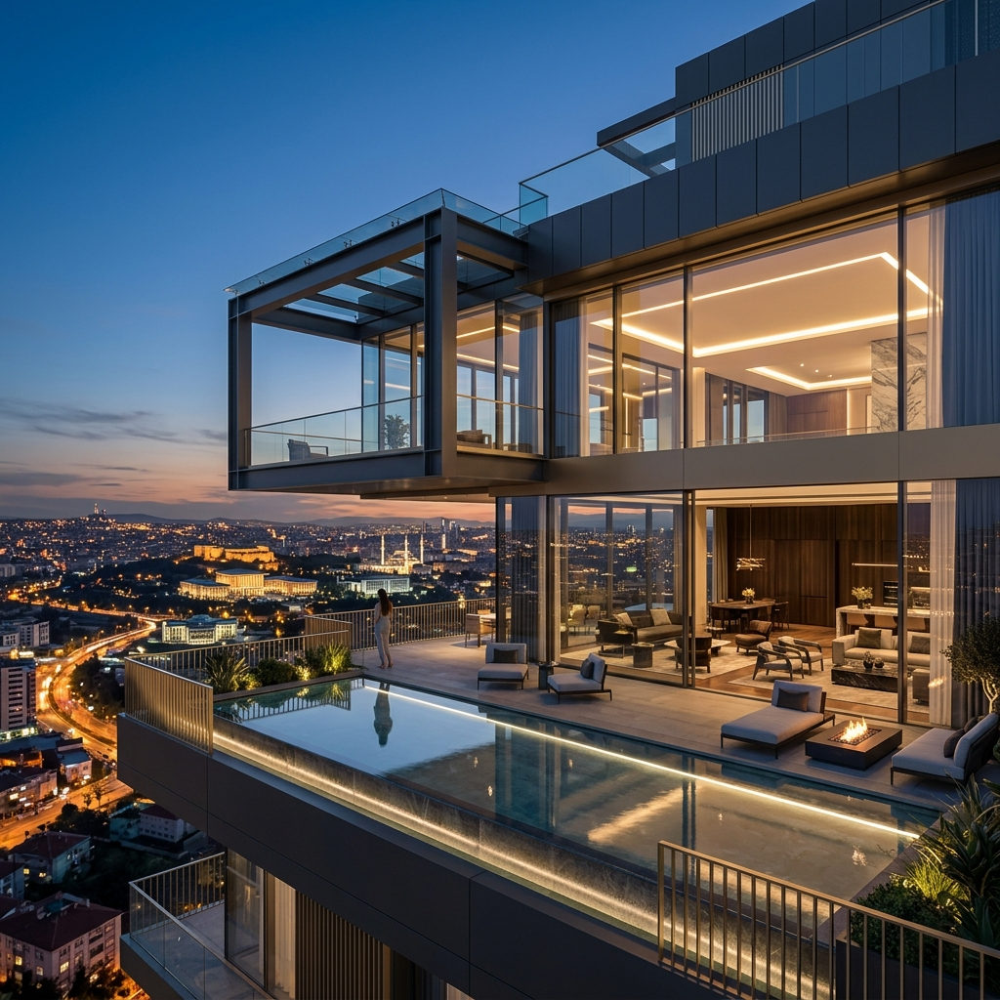

Her öneri üç eksenle şekillenir: kira çarpanı, değer artış beklentisi ve kentsel dönüşüm riski. Ankara'nın ilçe bazındaki dinamiklerini saha verisiyle takip ederek yatırımınızı sezgilere değil, ölçülebilir analize dayandırıyoruz. TrueMax Gayrimenkul güvencesiyle, off-market portföy erişimi ve vatandaşlık danışmanlığı tek elden.
TrueMax Gayrimenkul Bünyesinde
Bölge Analizi · Portföy Stratejisi · Vatandaşlık
Güncelleme: 28 Temmuz 2026
Çankaya Diplomatik Kuşak: Yabancı temsilcilik kiralama taleplerinde dönemsel artış izleniyor.
Oran & Koru Hattı: Amortisman süreleri sabitliğini koruyor, kira çarpanı yatırımcı lehine konumunu sürdürüyor.
Kentsel Dönüşüm Fırsatları: Batı koridorunda (Etimesgut vb.) yeni planlama alanları orta vadeli potansiyel sunuyor.
Tüm Türkiye genelinde yabancı ve yerli yatırımcılar için bürokratik engelleri sıfıra indiren 5 adımlı analitik ve yasal güvenceli süreç modelimiz. Adımlara tıklayarak detayları inceleyebilirsiniz.
Bütçe ve vatandaşlık hedefine uygun özel portföy eşleştirmesi.
SPK lisanslı bağımsız gayrimenkul değerleme raporu tanzimi.
Döviz Alım Belgesi transferi, tapu tescili ve 3 yıl satılamaz şerhi.
Yatırımcı, eşi ve 18 yaş altı çocukları için tek oturumda resmi başvuru.
Çipli Türk Pasaportlarının teslimi ve kira/gelir garantili mülk yönetimi.
Yatırımcının bütçe, vatandaşlık takvimi ve risk tercihine göre portföy havuzu önce bölge bazında süzgeçten geçirilir: Çankaya diplomatik kuşağı, Oran–Koru–Çayyolu getiri hattı veya kentsel dönüşüm bölgeleri. Ardından SPK değerleme kriterlerine ve vatandaşlığa tam uyumlu mülkler listelenir.
Bu portföyler halka açık platformlarda listelenmiyor. Her mülk bölge analizi, kira çarpanı hesabı ve hukuki inceleme süzgecinden geçirilmiştir. Erişim için yatırım hedefi ve zaman çizelgenizi paylaşın; size özel sunum hazırlanır.

Çankaya'nın elçilik ve kurumsal bölgelerinde, sabit kira talebi ve yüksek değer istikrarıyla öne çıkan konut portföyü. Bölge ortalaması üzerinde kira çarpanı.
Ankara'nın en yüksek kira çarpanına sahip üç mahallesinde, döviz bazlı kira getirisi hedefleyen yatırım odaklı konut portföyü.
400.000 USD üzeri, SPK lisanslı ekspertiz ve avukat güvencesiyle Türk vatandaşlığına tam uyumlu varlıklar. Hukuki uygunluk ön denetimiyle başvuru güvenliği.
TrueMax Gayrimenkul güvencesiyle halka açık listelenen konut, ticari ve arsa portföyümüze doğrudan ulaşın.
Portföy erişimi öncesinde yatırım hedefi ve zaman çizelgenizi paylaşın. Bu bilgiler, sunulacak mülklerin doğru bölge ve segmente göre hazırlanması için kullanılır.
Ali CÖMERT rehberliğinde özel portföy dosyası hazırlanıp iletilecektir.
Bir mülkü tavsiye etmeden önce üç soruyu yanıtlıyoruz: Bu bölgede kira talebi ne yönde? Değer artışı enflasyonun kaç katı? Kentsel dönüşüm riski bu fiyatı haklı kılıyor mu? Bu üç soruyu cevaplayamayan hiçbir teklif masaya gelmez.
Her teklif brüt kira çarpanı, TÜFE-defle edilmiş değer artışı ve ortalama boşluk süresi üzerinden değerlendirilir. Ankara'da ilçeden ilçeye değişen bu dinamikler yatırım kararının temelidir.
Yabancı yatırımda en kritik risk, değerleme uyumsuzluğudur. SPK lisanslı ekspertiz raporu, Döviz Alım Belgesi ve tapu tescil süreçleri avukat denetiminde tamamlanır. Hukuki ön denetimle süreç riskleri minimize edilir.
TrueMax Gayrimenkul ağı üzerinden halka açık olmayan mülklere birinci elden erişim. Açık piyasada çoklu teklif rekabeti yaşanırken, bu portföylerde tek alıcı olarak müzakere edilir.
Yabancı yatırımcılar için en az $400.000 USD tutarında gayrimenkul alımı ve tapuya 3 yıl satılamaz şerhi konulması temel şarttır. Ali CÖMERT ve TrueMax Gayrimenkul ekibi olarak, SPK lisanslı değerleme raporu, Döviz Alım Belgesi (DAB) transferi ve hukuki başvuru süreçlerini avukat denetiminde güvenle yönetiyoruz.
Mahremiyet ve diplomatik güvenlik nedeniyle, seçkin malikâne ve trofe varlık portföyümüz halka açık sergilenmez. Sitemizde yer alan özel başvuru formunu veya doğrudan hattımız (+90 532 238 40 39) üzerinden randevu talebi oluşturarak şifreli sunum dosyalarımıza ulaşabilirsiniz.
TrueMax Gayrimenkul'ün kurumsal ağı ve piyasa otoritesi sayesinde, hem açık piyasadaki fırsatlara hem de henüz satışa çıkmamış off-market (özel) portföylere doğrudan erişim sağlarsınız. Satın alma sonrasında da mülk yönetimi ve kira getirisi optimizasyonu kesintisiz devam eder.
Üst düzey diplomatik konutlar, kurumsal binalar ve özel malikânelerin satış süreçlerinde mülk sahipleri ve yatırımcıların ticari itibarı önceliklidir. Tüm görüşmeler kurumsal gizlilik sözleşmesi (NDA) ve KVKK standartlarında yürütülür.
Çankaya diplomatik kuşağı, sabit kurumsal kira talebi sayesinde değer istikrarını korurken Oran–Koru–Çayyolu hattı Ankara'nın en yüksek kira çarpanına sahip mahallelerini barındırıyor. Etimesgut ve Sincan ise kentsel dönüşüm sürecinden geçen bölgeler olarak orta vadeli değer artışı potansiyeli taşıyor. Bölge seçimi yatırım hedefine göre değişir: kira getirisi, değer artışı veya vatandaşlık uyumu farklı ilçeleri öne çıkarır. Doğru eşleştirme için bölge bazlı analiz önerilir.
Off-market gayrimenkul, henüz satışa çıkmamış ya da yalnızca kurumsal danışmanlık ağları aracılığıyla erişilebilen mülklerdir. Açık piyasanın çoklu teklif rekabetinin dışında kaldığı için fiyat müzakeresi daha elverişlidir; ayrıca mülk daha geniş bir alıcı kitlesine yayılmadan değerlendirme fırsatı doğar. TrueMax Gayrimenkul ağına bağlı off-market portföylere doğrudan erişim, Ali Cömert danışmanlığının en önemli pratik avantajlarından biridir.
Ankara ve Türkiye genelinde portföy danışmanlığı alan yatırımcıların deneyimleri. Mahremiyeti korumak için isimler baş harfle gösterilmektedir.
"Ali Bey ile Ankara Çankaya'daki elçilikler hattında malikâne alımımızda çalıştık. Metrekare hesabının ötesinde, tam bir sistem mühendisliği disipliniyle sunduğu getiri matematiği bizi etkiledi. Sürprizsiz, şeffaf ve güvenilir bir süreç yönetimi aldık."
Sonuç: Veriye dayalı analiz, kira getirisinde bölgesel avantaj sağladı.
Sanayi Grubu Yönetim Kurulu Üyesi - Ankara
"Yatırım Yoluyla Türk Vatandaşlığı sürecimizde bürokrasiyi tamamen sıfıra indirdiler. SPK lisanslı değerleme ve avukat desteğiyle ailemizin çipli pasaportları zamanında teslim edildi."
Sonuç: Hukuki altyapı sayesinde süreç kesintisiz tamamlandı.
Uluslararası Yatırımcı - Londra / Bodrum
"Off-market portföy erişimi sayesinde sermayemizi açık piyasadan önce, tek alıcı olarak doğru varlığa yönlendirdi. Analizin derinliği ve sürece olan hakimiyeti beklentilerimizin ötesindeydi."
Sonuç: Off-market erişimi ile açık piyasa rekabetine girilmeden işlem yapıldı.
Teknoloji Girişimcisi - İstanbul / Ankara